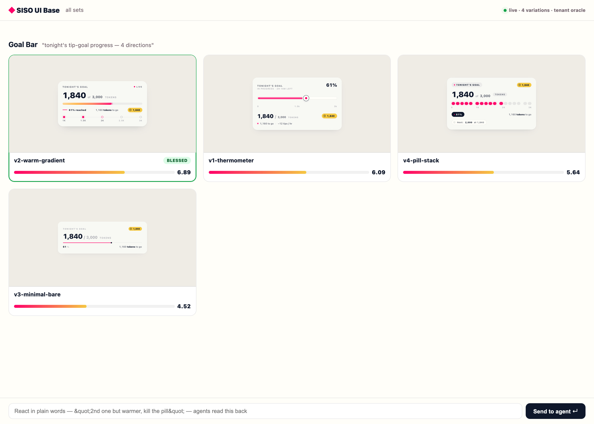

How to build UI with an agent fleet and you in the loop. Forge → show → react → iterate → graduate.
Agents are great at emitting a self-contained HTML file — no build, no broken imports, it just renders. So you let them sling HTML fast, show it to you cleanly and ranked, you react in plain words, they iterate, and only a blessed design gets ported to React. You spend your attention on taste; the agent does the production. This is the way to build UI with AI.

cd ~/SISO_Workspace/siso-ui-base UIBASE_TENANT=tenants/oracle node app/serve.mjs # → open http://127.0.0.1:8810/
npm i, no Vite, no build. Editing app/index.html updates the live page on refresh.You say "build me 4 variations of the goal bar." The agent writes 4 standalone .html files into the tenant folder, following the design DNA:
tenants/oracle/variations/goal-bar/
meta.json { "name":"Goal Bar", "prompt":"...", "slotId":"goalbar" }
v1-thermometer.html ← each one self-contained, renders alone
v2-warm-gradient.html
v3-minimal-bare.html
v4-pill-stack.html
Command: /forge-variations goal-bar 4. The grid auto-refreshes as files land (SSE folder-watch).
Each variation is screenshot and scored 0–10 on warmth · playful · clarity · craft · coherence against the tenant DNA, so slop never reaches you — you see ranked options with a TOP badge on the winner.
node pipeline/shoot.mjs # screenshot each variation node pipeline/judge.mjs ... # Codex-vision scores vs rubric.mjs (built from dna.md)
Command: /score-panel goal-bar.
Type in the feedback bar: "2nd one but warmer, kill the milestone dots." Or click into one for the full-screen deep-look (live interactive render + score breakdown + agent notes), or compare two side-by-side with score deltas. Your words land in tenants/oracle/feedback-latest.json — the agent reads it.
The agent reads your feedback, produces v5-warm-gradient-v2.html in the same set (with parentId set), keeping what scored well and fixing what you called out. The UI Box shows v1 → v2 with the score delta (↑ coherence +2). Command: /iterate.
You bless one. That writes tenants/oracle/winner.json. The blessed HTML is now the source of truth: the agent ports it to a React component pixel-for-pixel, then screenshot-diffs the React render against the HTML to verify they match. Command: /graduate.
6.89 → v1 6.09 → v4 5.64 → v3 4.52 — and the critiques were correct (v4 flagged for "AI-default pill stacking", v3 as "fintech card, not performer cockpit")feedback-latest.json + winner.json produced for the agent| Command | Does |
|---|---|
/forge-variations <c> [N] | Forge N self-contained HTML variations following tenant DNA |
/show-me | Boot the UI Box, hand you the URL |
/score-panel [set] | Screenshot + judge a set; write scores so the grid ranks |
/iterate | Read your feedback → next variation with lineage |
/graduate | Blessed HTML → React pixel-for-pixel, screenshot-diff verified |
/calibrate | Re-score the anchor; must stay ~9 — catches judge drift |
/add-library <src> | Register a component library the forge can pull from |
Point UIBASE_TENANT at that project's tenant dir (e.g. <project>/.uihub), drop in a dna.md (its design rules), and run the server. The engine is generic; the taste DNA is per-project. Oracle is the worked example.
../CANONICAL.html. The 33-repo prior-art catalog is ../registry/repos.json (run ./clone.sh to vendor any for study).